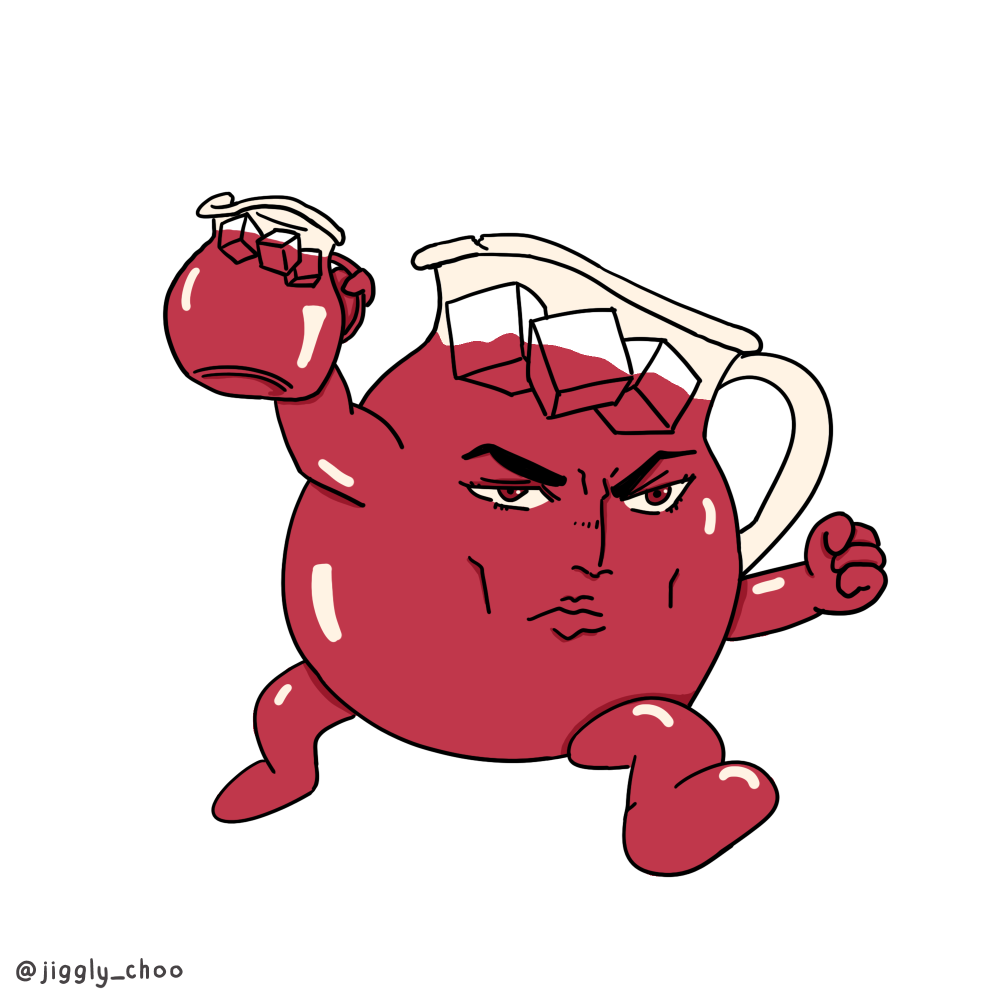

GoGo Juice.

GoGo Juice.
Is this a Jojo refrence? No, it's actually a sweet drink that can be spiked with alcohol if desireded or blended into a sweet treat in the summer!
Ingredients
- One Gallon of Apple Juice
- Ginger Ale
- One Packet of Fruit Punch Flavored Kool Aid
Optional
Steps
- Mix the Kool Aid with the gallon of apple juice.
- Pour the Ginger ale over the mixture
- Surve cold with ice and optinal Lime slice.
- You thought it was Honey BooBoo, but it was actually Dio!